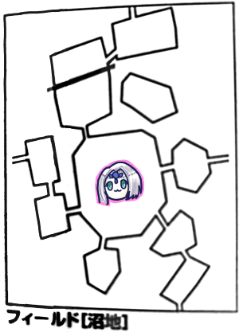
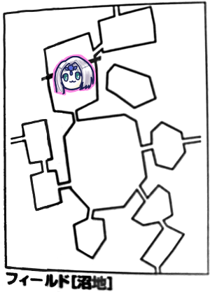

コロナになってオンセで加速しつつある我らがエターナルキャンペーン！
前回は新米騎士の依頼を全て完了させたところで終了しました。
各自レベルアップ報告などをします。
誰がどこを成長させたかとか記録とるつもりで全然取ってなかったですね。割と諦め気味です。
平均レベルなんかは書いていくので察してください←
GM「今君たち全員ぴったり7レベルだよね、ということは受けられるミッションが増えます。まずラプテラスの討伐が発生します」
みぞれ「らぷてらす？」
GM「山岳の主です。あと守りの剣の探索が発生します」
タッシュ「かけら今いくつあるの？」
ナナシ「62本すね」
タッシュ「すごいな、それ捧げたいね」
「名誉点62d6？すごいことになりそう」
じゃらじゃら
みぞれ「振ってるｗｗｗ」
守りの剣の依頼を受けることになりました。
GM「これはローレンス(村長)からの依頼になります」
ローレンス「君たちのおかげでもうこの村は街と呼んでも差し支えないレベルにまで発展した。しかしここには守りの剣が存在しない。蛮族の砦は潰したがまだ脅威は残っている、そのため守りの剣を取ってきてもらいたい。沼地のどこかにある遺跡に守りの剣が保存されているらしい」
GM「これを受けるってことでいいかなー」
「それどこ情報ですか？」
ローレンス「沼地に住んでいるドマという男からの情報だ。彼は沼地の一番西に住んでいる」
「じゃ山岳エリアから行くのがよさそうだね」

ナナシ「イベント3です」
GM「猟師イベントです」
ナナシ「誤射きたー！タッシュ！しね！5」
タッシュ「え、名指しかよ」
GM「帽子が落ちています。ナナシが帽子を拾うと住所が書いてあります。場所を決めてください」
ナナシ「6」
GM「街です」
タッシュ「ルキスラ？」
GM「そうです」
タッシュ「わー、(セズウィックで十分な買い物ができるようになって)行かなくてもよくなったのに行くことになった」
GM「届けると星がもらえます」
タッシュ「行くしかないじゃないか」

ブルーローズ「イベント1！なにもなし！」

タッシュ「イベント4です」
GM「山岳イベントです」
タッシュ「3です」
GM「崖崩れがあったので上らなければいけなくなりました」
みぞれ「崖崩れいやー…あ、起こったんじゃないだ、上らなきゃいけないのか」
GM「そうそう、崖を越えなければ先へ進めないよ。高さは14m、目標値は10。風が吹いてて-2、高さでー2、金属鎧装備で-2になります」
ピーター「ジャックの豆の木使う？」
タッシュ「一番ダメな人にウォールウォークかけます」
ピーター「ウィンドウォールで風の-2消えません？」
GM「いいよー」
タッシュ「MP回復するんだっけ、じゃ全員にウォールウォークかけます」
みぞれ「回復するってなに？」
タッシュ「フィールド間移動で1日経過するから回復する。えーと、5倍がけすればいいんだよね。はいかかりました。効果時間は3分だからその後は自力で上ってもらう」
沼地へ移動しました。

GM「沼地に入りました。ここは湿地帯になっていて、歩くと足が沈みます。なんだか異臭もしています。さて、君たちがここに入った瞬間ですね、タッシュ先生」
タッシュ「はい？」
GM「待っていたぞという声がします。1d6振ってください」
タッシュ「俺が振るの」
GM「あなたが狙われてるから」
タッシュ「4です」
GM「移動しました」
みぞれ「移動？」
GM「ふふふ」
GM「ではイベントです。ピーターに振ってもらいましょうか
ピーター「5です。訓練じゃないからセーフ」
GM「沼地イベントです」
ピーター「2」
GM「君たちの足が深く沈みこみました。ぼふっと可燃性のガスが噴き出しました。火気のあるものを持ってる人はいますか？」
みぞれ「魔動バイクは大丈夫ですか」
GM「大丈夫です」
ナナシ「ナナシは野望が燃えてます」
GM「じゃ爆発してください。ピーターは火の妖精はいますか？」
ピーター「いまーす」
GM「そいつは可燃性なんで」
ピーター「まじか」
GM「爆発する可能性は低いんだけどね。2d6でファンブルが出たら爆発してください」
ピーター「ころころ。セーフでしたー」
この後探索しましたが失敗しました。
GM「探索レベルが高いってことはこのフィールドのレベルが高いってことです」
タッシュ「14で届かないのかー」
このエリアには小屋があるようです。行ってみます。
GM「ボロい屋敷になっています。明かりが漏れており中に人がいる気配がします」
ブルーローズ「こんこん、どなたかいらっしゃいませんかー？」
GM「エルフが出てきました」
ブルーローズ「あなたがドマさんでいらっしゃいます？」
エルフ「いかにもわしがドマだ。何者だね？」
ピーター「私たちはセズウィック村で村起こしをしている…なんだっけ悠久の薔薇団だっけ？」
ドマ「ふむ、この隠居じじいに役に立てることはありそうかね？」
ローレンスさんからの依頼で守りの剣を探していることを告げます。
ナナシ「俺は魔剣が欲しい」
ブルーローズ「黙りなさいナナシ」
ドマ「セズウィックとな、あのちんけな村も発展したんだなあ、守りの剣を取りにこれるようになるとは」
ナナシ「そのちんけな村、今は要塞ですよ」
タッシュ「街って言わない？」
話を聞いた結果、魔動機文明の遺跡が一番北側にある可能性が高いということがわかりました。
但し、マップを見ての通り、その手前の南西にあるエリアに「生きている壁」があり、直接は行けない仕様になっているようです。
みぞれ「なんですかその生きている壁って」
ドマ「聞かれたなら答えてあげるが情けというもの」
みぞれ「ロケット団かな？」
ドマ「あの壁は門も扉も階段もなく、飛び越えようとすると飛んだ分だけ伸びるので超えることができないんだ。あの北の岩山には遠い昔勇猛さをもって都を築いたものがいて、わしはそれを見つけにここにきたんじゃよ」
「ほうほう」
ドマ「エルフは水を友とするので沼地は平気なんじゃが、腐敗の女神ブラグザバスの神殿が中央に立っているのでなかなか探索が進まなくてな。あの蛮族の神殿の中にある神像に込められた呪いが、この地に邪悪な影響を与えているんじゃ。そしてそれは沼地を徘徊しているアンデッドジェネラルによって守られている」
みぞれ「沼地の主ってこいつ？」
GM「こいつ。こいつすごくアクティブに動くからね。セージ知識判定できるよ」
ピーター「いきまーす！23！」
GM「すごいじゃん、弱点も抜きましたおめでとう」
ナナシ「これ前失敗したけどもっかい判定していいの？」
GM「シチュエーションが違うからまた判定できるよ。14レベルモンスター、アンデッドジェネラルです」
「14！？」
ナナシ「タッシュ先生ならひとひねりですよ」
タッシュ「かけら持ちなら14個刺さってるってことでしょ？あほじゃん？」
GM「主だから絶対刺さってますね」
沼地の調査をしているドマからは以下のクエストを提示されました。
・沼地の「生きている壁」を超える方法の発見
・神殿の中にある神像の破壊
GM「壁を超える方法を見つけてくれたら星がもらえます、あと収納ブレスレットというアイテムがもらえます。…この手の便利アイテムはブルーローズとピーターがろくでもないことを考えそうで怖いんだけど。神像の破壊は通訳の耳飾りと魔晶石を1個プレゼント」
ブルーローズ「こんなアイテムを持ってるなんて、若いころは相当すごい冒険者だったのでは？」
ドマ「(悲しい目をして)かつてはローレンスと一緒に冒険したこともあってな」
みぞれ「とりあえず受けますか」
ピーター「3年ぐらい後になりそうですけど」
ブルーローズ「タッシュ先生って呪いかけられてなかったっけ？」
みぞれ「リプレイ見ると使い魔に真っ先に狙われるって書いてあるな」
GM「その通り、沼地に入った瞬間にアンデッドジェネラルにバレます、但し位置までは把握されません。沼地にいることを感知されるだけです。でもアンデッドジェネラルは呪いの効果で1時間に1回移動します」
「ひええ」
「呪い解いてみる？」
「対抗できないでしょ相手LV14やぞ」
「クリティカルが出れば…一発やってみる？」
みぞれ「あれ？リムーブカースこないだ使えなかったんじゃなかったっけ」
ブルーローズ「今は使えるようになりました！」
タッシュ「知力は？3？2？」
ブルーローズ「知力低いんですわー」
タッシュ「うーん…差が4か、なら射程圏内かな」
ブルーローズ「スフィンクスノレッジでリムーブカース！15、う、低い…」
「あれこれ達成値いくつだっけ？」
GM「達成値出すよー。ころころ。2d6+17で25です」
「17ｗｗｗｗｗ」
GM「ブルーローズの腕にびりびりと衝撃が走ります。精神力抵抗20でおねがいします」
ブルーローズ「レジスタンスは使えますか？」
GM「呪文の抵抗に主動作使えないから使えません」
ブルーローズ「21！」
GM「失敗した時に差が4になるとバックファイアが起こります。ファンブルするとダメージが2倍になります」
みぞれ「解けるまで繰り返すのは却下だ」
ピーター「誰だクリティカル出るまでやるとか言ったやつ」
ブルーローズ「タッシュ先生、呪いは甘んじて受けて欲しいのですわ」
タッシュ「はい」
ピーター「ドマさんに中央右上の孤立してるエリアがどうなってるか聞きたいです」
ドマ「そこは盆地になってるな。西側のエリアから岩の亀裂を抜けていくことができる。入口はツタに覆われてるから切り開く必要があるぞ。生える速度が速いから盆地に移動するたびに払う必要があるが、探索すれば見つかる」
みぞれ「移動する時は毎回探索が必要ってこと？」
GM「フィールドにいる間は1回の判定でいいです」
南へ移動

GM「地面が黒ずみ湿気を帯びています。さっきのエリアと似たような感じですね。ではみぞれさんイベントを」
みぞれ「3です」
GM「あ、ジェネラルの移動をお願いします、タッシュさん」
タッシュ「5です」
GM「ふむ、ではアンデッドジェネラルはここで…瘴気イベントが発生しました。もう一度1d6どうぞ」
みぞれ「3です」
GM「瘴気のもやの中、青白い光がゆらめきながら浮遊しています。全員精神抵抗を目標値17でお願いします」
全員抵抗しました。SAN値チェックかな？
ブルーローズ「みぞれちゃん魔香草炊いて」
みぞれ「はーい、10回復でーす」
ブルーローズ「むしゃむしゃ、おいしかった」
みぞれ「食うんか」
東へ向かいます。

GM「ではお楽しみのジェネラル移動をお願いします」
タッシュ「6です」
GM「鬼火に囲まれた将軍が君たちがさっきいたエリアに移動していくのが見えました」
「あぶねええええ」
GM「移動しなければよかったのに…」
GM「巻貝を伏せたような形をした塔が建っているのが見えます。建物にはカニの足が生えていて、口のような入口にブラグザバスの聖印があります」
ナナシ「イベント4です」
GM「沼地イベントです」
ナナシ「6です」
GM「ねばねばした沼が体にはりついて離れない！次の日の朝まで防護点が+1されます」
「あれ、お得イベント？」
「でも全身真っ黒だよ」
GM「さてどうしますか？神殿に入りますか？」
「中がどうなってるか分からないからなあ」
ナナシ「俺単独で隠密してきますよ」
「何かあったら駆け付けられる？」
GM「中で何かあったことが分かれば」
みぞれ「うーん、ライフシグナルかけて状態知ることできないかな？HP減ったら感知できるみたいだし」
ナナシ「避けまくったらわからないのでは」
みぞれ「距離と三次元的な方角がわかるってあるからそれで判定できないかな」
GM「OKです、できることにしましょう」
みぞれ「じゃナナシにライフシグナルかけます、成功」
ナナシ「隠密判定しまーす。成功」
GM「ではナナシは神殿の入り口をくぐりました。吐き気をもよおすほどの瘴気が漂っています。床は黒い水で覆われ、奥の方には神像のようなものが見えますが、近づいてみないとはっきりとはわかりません。その手前には3体の怪物がいます。2体は立派な骨格をした人間の骸骨で、立派な兜とラウンドシールドと槍を装備しています。残りの1体は白いケープを被った半透明の女性で、口の動きでぶつぶつ何かを言っているようです。見つかったら戦闘になります。ころころ。あ、骸骨2体目がクリティカルしました」
ナナシ「まじか」
GM「ナナシは接敵されました。他のみんながどれぐらいでかけつけられるかは1d3を振ってもらいます。そうですね、センサー持ってるみぞれと、ナナシが敬愛するタッシュ先生に振ってもらって低い方を採用しましょう」
みぞれ「2」
タッシュ「3」
GM「では2ラウンドですね。ナナシは2ラウンド耐えられるのか！？先制判定お願いします」
ナナシ「17」
GM「ナナシが先行です」
ナナシ「ありがとう神様。攻撃しますよーん。21」
GM「13」
ナナシ「回避7かーそのまま当てます、12点…すげーひっく。同一個体にファストアクションでウィップで攻撃、胴体を狙いにいきます。クリティカル」
GM「12、だめでーす」
ナナシ「14点ダメージです」
GM「スケルトン1に2回当たった感じかな。今絡んでるんだよね？」
ナナシ「絡んでます。なので判定-1っすね」
GM「ナナシ筋力いくつ？」
ナナシ「フェンサー込みで10です」
GM「ボーナス3持ちか」
ナナシ「挑発攻撃したから攻撃しないとダメっすよー」
GM「対抗できないんだっけ」
ナナシ「この話3回目だった気がします」
GM「3回目ってことはFAQもないのかー、仕方ない、普通に攻撃しよう。絡んでる方で、19、これ修正既に引いてます」
ナナシ「22、3差かーダメだなこれ」
GM「ではスケルトン。自由に動ける方は普通に殴ろう、18」
ナナシ「21、また3差」
GM「処理重くしたくないから単純にいきます。ゴーストが前進します。ぱーんち！16」
ナナシ「あ、ガゼルフット入れ忘れてた！本当は全部4差になってる…もうだめか」
GM「もう処理しちゃったから…あー、入れていいよ」
ナナシ「じゃブレードスカート。12点と11点…はいってかんじですね」
GM「ではあらためてゴースト、もう振ってあるんでどうぞ」
ナナシ「20。はい。あれ。ゴーストパンチっていくつでしたっけ？16？ちょうどやんガゼルフット様様やな」
GM「無駄です。ブレードスカートは相手の体をすかーっと通り抜けます」
ナナシ「物理無効かー」
GM「2ラウンド目！これが終われば味方がやってきます！」
ナナシ「そしたらーより傷ついてる方のスケルトンにサーベルで攻撃します。16」
GM「13」
ナナシ「当たった！15点ダメージ、スケルトンじゃなかったら回ってたな」
GM「じゃスケルトンの攻撃」
ナナシ「避けた！ブレードスカートいきますー、13点ダメージ」
GM「ダメージくらってる方が盾をすてて槍を両手に持ちます」
ナナシ「なんだそれ」
GM「もう1体のスケルトンいきます」
ナナシ「ダメだ3差」
GM「幽霊いきます。パンチを打つと見せかけて大きく息を吸って呪文を唱えます。タッシュ先生の呪文によく似ていることがわかります」
ナナシ「おお」
GM「14で抵抗どうぞ」
ナナシ「19！」
GM「抵抗されたか、18点ダメージ、半減で9点だね」
ナナシ「ちょういてぇ」
GM「ではこれでラウンド3、ここで他のキャラたちがかけつけます」
みぞれ「なんかナナシちょうぴこぴこしてたけど大丈夫！？」
ナナシ「あのメンヘラ(ゴースト)ちょうやばいんだけど」
ブルーローズ「ナナシ！骨は拾ってさしあげますわ！」
ナナシ「いや助けろよ」
ピーター「セージ判定できますか？」
GM「どうぞ」
ピーター「えいっ！お、ゴーストクリティカルしました！」
GM「骨はスケルトンガーディアンですね。幽霊はスペクター、両方弱点抜いてます」
スケルトンガーディアンは刃のついた武器からのクリティカル無効、残りHP40以下で命中率+2、残りHP25以下で+4、残りHP10以下で必中だそうな。さっきのやりに持ち換える演出は命中率アップかな？
ピーター「ゴーストにディストラクションかけます。これがかかると魔法使えなくなります、あファンブった」
GM「呪文の選択はいいんだけどなー」
ピーター「やったー経験値だー！」
ブルーローズ「ホーリーライト使いたいなー、威力20でアンデッドに範囲攻撃、制限移動だと届かないので異貌化で接近します。私がいかにプリーストなのかを見せてあげますわ！」
タッシュ「グラップラーじゃダメなの」
ブルーローズ「スフィンクスナレッジも使います」
GM「一瞬だけあたまよくなって魔力上がるやつだね、はい。2上がるのか、つよいね」
ブルーローズ「18！」
GM「あっ全部通っちゃった」
ブルーローズ「16 点ダメージ！」
ナナシ「俺が与えた全ダメージより多いんだけど」
ブルーローズ「合計…よんじゅう…！」
みぞれ「スケルトン1にバーストショット、命中クリティカルー！」
GM「うん避けられないね」
みぞれ「ダメージ17点でーす」
GM「いってぇ…」
タッシュ「リープスラッシュを確実化で一番弱ってるやつに撃ちます。15と16なので16採用」
GM「14、耐えない！ここでファンブルしてくれるのが先生」
ナナシ「やめて」
タッシュ「ダメージ12点です」
GM「落ちました」
タッシュ「抵抗されてたら推定残りHP1か、あぶねー」
ナナシ「残りスケルトンの盾は飛んでる？」
GM「あー飛んでるわ」
みぞれ「推定HP38です。てことは命中+2なのか」
ナナシ「スペクターの首を狙いにいきます」
GM「幽霊は首ないんじゃない？」
武器「ないの？」
GM「てかこいつ呼吸しない」
ナナシ「なるほど、じゃウィップでスケルトンの胴体狙います。23」
GM「10、全然届きません」
ナナシ「14点ダメージ」
GM「スケルトンの攻撃、ナナシに攻撃、17、絡みの1引いてあります」
ナナシ「26」
GM「おーたっけ」
ナナシ「ブレスカで14点ダメージ」
GM「スペクターさん真語魔法たくさん使おうと思います。ファイアボールを後衛に向かって打つよ。ピーターみぞれタッシュを巻き込みます。15！」
タッシュ「抵抗」
ピーター「失敗」
みぞれ「失敗」
GM「あ、魔力を間違ってた、だから19だ、全員通りました、というわけで死んでください、14点ダメージ…ひっくー！」
ナナシ「うさぎちゃんにディストラクション撃ってもらってスペクター黙らせられるなら総攻撃で」
ピーター「じゃディストラクションで。19、成功はしました」
GM「抵抗して！18」
ピーター「いえーい勝ったー！じゃそのままブルーローズにいつもの」
GM「なんだいつものって」
ピーター「ヴォーパルウェポンにしようかなと思ったけどスケルトンにパラミス撃ちます」
ナナシ「GMがだいっきらいなあれだな」
ピーターGMがだいっきらいなあれです。素通りするけどランクBなんで1ラウンドのみ有効です」
ナナシ「スケルトンちょうこわいからできれば沈めたいよね」
ブルーローズ「私殴ってみます？」
ナナシ「50点以上いるよ」
ブルーローズ「それ無理だわ」
タッシュ「ファイアウェポンかけるよ、2人、か3人に」
みぞれ「3人目は誰すか」
タッシュ「自分、一応前に行って殴ることを想定してる。えーと、3倍がけでー」
ピーター「タッシュMP73もあるのｗｗｗ」
タッシュ「発動！かかりました」
ブルーローズ「トンファーキャッツアイ魔力撃でスケルトン殴ります、19」
GM「11」
ブルーローズ「あっマッスルベアーとか入れるの忘れた、出目が1と2…低っ、22」
みぞれ「出目低いのにダメージ高いなー」
ナナシ「ここで補助行動入れられるのかな」
GM「これ一連行動だからだめですね、ファストアクションとかならOK」
ブルーローズ「追撃します！19」
GM「13」
ナナシ「これスフィンクスナレッジとマッスルベアー入ってたら5点違ったのか」
ブルーローズ「あっ回った、39」
GM「ふっとんだ」
みぞれ「さすがだ、私が手を下すまでもなかった」
ナナシ「じゃいっちゃっていいかな、ウィップで挑発攻撃します、22」
GM「19」
ナナシ「えっとー絡まないんですよね。18点ダメージ。はい」
みぞれ「クイックローダーして撃つつもりだったけどスケルトン落ちたし、MP4するしチアでいいかな？普通にリロードします。かしゃん」
GM「スペクター殴ります。18」
ナナシ「17、当たった」
GM「6、4で14点ダメージ！」
ナナシ「幽霊パンチいてぇ」
GM「第4ラウンドどうぞ」
ナナシ「泣きの挑発攻撃、ウィップで、19、ほら避けられまい」
GM「21避けた」
ピーター「主動作で札を使います。パラミス、緑Bで1枚、17」
GM「18、抵抗」
ピーター「じゃ続けてー連続賦術でもっかい、あっ同じもの使えないんだっけ」
GM「連続賦術…1回の主動作で2個使う、目標変えられない、同じものは使えない…へー便利だね」
みぞれ「うさちゃんいつも補助で2回行動してないっけ？」
GM「賦術は1手番に1回しか使えない、つまり主動作と補助動作どちらかでしか使えないから、それを突破するための連続賦術だね」
ブルーローズ「トンファー魔力撃キャッツアイでスペクター殴ります！23」
GM「16」
ブルーローズ「じゃ今度こそファイアウェポンを入れて…+2だっけ？27点！続けます、15」
GM「17、回避」
みぞれ「ソリバレキャッツアイで19」
GM「20回避」
みぞれ「なーーーーー」
タッシュ「じゃスペクターにリープスラッシュを確実化でかけるよ、15、17で協議の結果17を採用することにいたしました」
GM「協議の結果抵抗することにしました、成功」
タッシュ「15点ダメージ」
GM「消し飛びましたー」
剥ぎ取りと回復をします。
その後探索を失敗しましたが奥にブラクザバスの神像を発見しました。
ナナシ「トラップとかあるかな？探索します」
GM「トラップはなかったけど近づくと…ナナシ、精神抵抗お願いします」
ナナシ「抵抗しました」
GM「見識判定できますよ」
「うさちゃーん」
GM「目標は18です」
ピーター「うさちゃん判定するよー、20、成功したよー」
GM「極めて強力な呪いの力です。この沼地の呪い属性の効果は全てこの神像によるもので、これを破壊すればイベントのいくつかを無効化できます。これを調べようとすると圧倒的な呪いの魔力にさらされてダメージを受けるかもしれません。あ、見識判定も調査に入るから抵抗して」
ピーター「あっこれも？16」
GM「失敗ですね」
タッシュ「16で失敗かよこえーな」
GM「12点ダメージ受けてください」
ピーター「さっき回復した分が吹き飛びましたね」
GM「あと見識判定の結果、毒、呪い、病気、精神効果は無効だとわかりました。あとほとんどの属性はクリティカルしません」
メモしそびれたけど土だけクリティカルするっぽいです。
GM「破壊行動はラウンド制になります」
みぞれ「HPは分からないんですか？」
タッシュ「構造物判定みたいなのがあった気がする」
ピーター「るるぶ1に載ってるけど、10分…」
ナナシ「また血が吹き飛んじゃうねぇ」
みぞれ「ぶっぱする方がいい気がする」
ナナシ「いっちょ世界救っちゃいますか」
みぞれ「グレネード撃ちます、18」
GM「18は抵抗しました」
みぞれ「まじか、17点ダメージ」
GM「半減で9点ですね、精神抵抗してください」
みぞれ「げ、攻撃してもダメなのか、14、失敗」
GM「呪いダメージ20点です」
みぞれ「なにそのダメージあほちゃう」
GM「これ先制取った扱いにしてるからね」
みぞれ「え、なんか攻撃してくるのこれ」
ナナシ「じゃウィップでいきます、14」
GM「ぶっちゃけ言っときます、命中はファンブルしなければ成功です」
ナナシ「15点ダメージ」
GM「止まった」
ブルーローズ「15点が通らない…だと…」
GM「精神抵抗お願いします」
ナナシ「成功しました」
GM「ではピーターセージ判定どうぞ、18で」
ピーター「19、成功」
GM「相手の防護点は15です。ファストアクションする？」
ナナシ「やめときます。これ魔法部隊に殴ってもらった方が効率いい」
みぞれ「私は死ぬけどね」
ナナシ「ブルーローズに単身頑張ってもらう」
タッシュ「前進してブラストぶっぱしてみるかー」
みぞれ「これが俺の魔力撃」
タッシュ「ブラスト使います」
GM「抵抗するよ」
タッシュ「あっこれ抵抗するんだった、ちょっと待って、戻って、抵抗されないようにマナ・コンバージェンスっていうのに出てきていただいて、補助魔法使った上でブラストするんで」
GM「絶対プラスするマン」
タッシュ「17」
GM「抵抗しました」
タッシュ「は？」
GM「20で抵抗」
タッシュ「うわーーー…16点ダメージで」
GM「8点くらいました。タッシュ先生精神抵抗判定」
タッシュ「ちなみにこれはアンデッドからの攻撃？」
GM「呪い属性だから違うよ」
タッシュ「抵抗しました」
ピーター「主行動でヴォーパルウェポンとクリティカルレイを使います、両方ともAテーブルのものです。威力表の出目に+2」
ブルーローズ「その場合どどんとふでどうやって振れば…」
GM「あった、クリティカルレイ用のダイスロール式」
タッシュ「ちゃんと対応してる、さすがどどんとふ」
ピーター「行使判定します、成功でーす」
ブルーローズ「マッスルベアとスフィンクスナレッジ入れて、異貌化して殴ります。15」
GM「ダメージどうぞ」
ブルーローズ「ヴォーパルウェポンが+2？」
ピーター「そうです、いいやつ使ってます」
ブルーローズ「えーと、クリティカルレイは…ドルをつけて…？」
以下どどんとふの実際の結果をコピペ。
>ブルーローズ：k15$+2[10]+13+8+3+2+1+2 魔力撃・マッスルベア・スフィンクスノレッジ・異貌化・ヴォーパルウェポン込みの威力出します！
SwordWorld2.0 : KeyNo.15c[10]m[+2]+29 → 2D:[3,3]=8 → 5+29 → 34
GM「34！？あたまおかしいな」
ナナシ「これがゴリラパンチや」
ブルーローズ「これは攻撃するたびに精神抵抗？」
GM「です」
ブルーローズ「20、抵抗成功！…あっこれもっかいこの式書かなきゃいけないの」
ナナシ「命中すればいいからそのまま2d6で振っちゃえ」
ブルーローズ「はい、3,3」
GM「命中しました」
タッシュ「クリティカルレイって1回限りだから次は乗らないんじゃない、乗ったらとんでもないことになるよ」
ブルーローズ「33点！」
GM「ゴリラがいる。じゃ精神抵抗お願いします」
ナナシ「武器の威力なんて飾りだよね」
GM「全員攻撃した？じゃ神像のターンです。神像はかなり全体的に大きなヒビが入っています。それが補修されていきます。2d6+13=19点回復」
「自動回復かよー」
ピーター「そういや私ウィスパーヒール撃てばいいんだ、相手魔法生物だし」
ブルーローズ「戦闘中できたっけ？」
タッシュ「いつもは乱戦で撃てないから使わないだけだよね」
ブルーローズ「ヴォーパルウェポンはまだあるんだよね」
タッシュ「6ラウンド持続します」
ブルーローズ「さっきと同じで、命中成功、ダメージ30点です、次いきます」
GM「あっ、ゴリラ精神抵抗して」
ブルーローズ「15、失敗しました」
GM「ダメージ20点」
ブルーローズ「追加いきまーす、命中、ダメージ31点」
GM「精神抵抗」
ブルーローズ「ちょっとナナシお願いしていい」
ナナシ「いきますわよ！19」
GM「22点ダメージ」
ブルーローズ「さっきのターンの魔力撃って精神抵抗にマイナス入るんだっけ、どっちみち当たってるけど」
タッシュ「じゃタッシュさん入れるよ、ブラストマナコンバージェンス入りで、21」
GM「おー、固定20だから通った」
タッシュ「ストレート！クリティカルしてくれたらハッピー！うーん15点、この辺がタッシュさんですね」
GM「精神抵抗して」
タッシュ「あ18失敗」
GM「地獄へ落ちるのだー！18点ダメージ」
ピーター「じゃいきまーす、補助行動でリインフォース使います。魔法ダメージ+1、赤A1枚使います、そのままフレイムアロー使いまーす」
タッシュ「あ、すっかり忘れてたけどマナ・コンバージェンスでダメージ1点上がってるからできたら増やしといて」
GM「はい」
ピーター「じゃフレイムアロー撃ちまーす、21」
GM「通りました」
ピーター「14点ダメージ」
GM「頭と胴体が残った！ピーター抵抗判定どうぞ」
ピーター「18」
GM「18点ダメージくらえ！」
みぞれ「じゃ後は任せた、バーストショットで攻撃、命中しました、ダメージ13点」
GM「神像は崩れました！精神抵抗判定お願いします」
みぞれ「えっ壊したのに来るの！？16、はい無理」
GM「20点ダメージ」
みぞれ「しんだ、-1です」
GM「1を目標に生命抵抗」
みぞれ「出目1、2…あぶねええええええ！！！」
タッシュ「大丈夫？日記つけてる？」
みぞれ「記録班だから大丈夫(メタ発言)」
ピーター「ウィスパーヒール2回撃つよ」
ナナシ「うさちゃんどこぞのヒーラーと違って有能だな」
ブルーローズ「わたしヒーラーじゃないもん主砲だもん」
タッシュ「さっきプリーストって言ってたじゃん」
GM「この神像漁れます」
ナナシ「お、じゃ漁ろう。16」
GM「足きりは15、成功しました、虹の魔石が手に入りました。1個5600ガメル、金Sです」
「すげーー」
GM「これが1d6手に入る。とどめさしたみぞれが振る？」
みぞれ「私でいいの？」
ナナシ「大丈夫、1個は手に入る」
みぞれ「フラグ立てないで？ころころ…1、あっ…」
みぞれ「これ自由行動ないんだよね？」
GM「ないです」
神殿を出てそのまま北に移動しました。

GM「葦に似た植物がたくさん生えている沼地です。高い石造りの壁によって遮られています」
みぞれ「うさちゃんセージ判定できる？」
GM「その前にイベントチェックしましょう。ブルーローズお願いします」
ブルーローズ「へいへーい！5」
GM「イベントです」
ブルーローズ「4です」
GM「4番は…これは消えるのか？」
ブルーローズ「お、呪いトラブル？」
GM「あ、残るわ、残るほう残してくれた。ここの沼地はすげー不衛生です！生命抵抗判定してください！目標値2d6+7＝13」
ナナシ「ファンブルしました」
ピーター「拾い食いでもしました？」
GM「ナナシはけだるさに襲われる。眠気もあり微妙に息苦しい」
ナナシ「え、なにこれ」
GM「全ての行為判定に-1」
ブルーローズ「これってキュアディジーズで取り除けますか？」
GM「できます」
ブルーローズ「じゃキュアディジーズしてあげようか？」
ナナシ「しにたく、ない」
ブルーローズ「2d6=7、発動しました」
GM「はい、やりなおしてください、これ対抗です」
ブルーローズ「えっ…えーと、17です」
GM「成功しました」
ブルーローズ「これにこりたら拾い食いはしないことね！」
ピーター「壁は近寄らないとダメですか」
GM「ダメです」
ピーター「しらべまーす」
GM「前方から白い小さな人形が一体、ひょこひょこと近づいてきます。5つの目を持つ瞳の紋章が輝いています。サイズはちょうどピーターと同じぐらいです。紋章はタッシュ先生が見ればゴーレムであることがわかります。口をぐわっと開けて『金貨、金貨、人数分』と言います」
「金貨ってあれ？オボロンに行った時に手に入れてなかったっけ」
「よく覚えてるな」
「アイテムに金貨1枚あった」
ピーター「とりあえず金貨ってこれ？ってガメル見せてみます」
GM「人形はそっちに口を向けます」
ピーター「与えてみます」
GM「ぐげーって言って同じことを繰り返します」
「うーん、例の金貨人数分揃えてから来る？」
ブルーローズ「楽譜って勇猛ななんとかはないんだっけ？」
「持ってないね」
ブルーローズ「ゴーレムの横通って壁に近づけますか？」
GM「できますよ」
ブルーローズ「壁って何mぐらいありますか？」
GM「40mぐらい」
みぞれ「高さの話？」
GM「そ、高さ」
タッシュ「ウォールウォークで上ってみる？」
ナナシ「行ってくる。死んだらその時はよろしく」
タッシュ「ウォールウォーキングをナナシにかけましょう」
GM「ナナシ通常移動27m？じゃ2ラウンドで超えられるはずか」
タッシュ「発動しました」
GM「2ラウンド経ったんだけど壁がその分にゅーんって伸びました」
「だめかー」
みぞれ「とりあえずこの壁調べてみたら？」
GM「見識判定だね」
ピーター「セージ判定しまーす。23」
ナナシ「かしこっ」
GM「これはですね、ちょっとよんどころない魔力によって作られてまして、正式な手段以外では超えられないです。正式な手段は、5王国の金貨をこのゴーレムに差し出すことです。これは手に入る場所は限られています。おわかりですね？」
「せやな」
みぞれ「でもこれで方法はわかったってことだよね。できるかどうかは別として」
ブルーローズ「ドマさんに報告はできるのか」
みぞれ「戻りましょうか」
ブルーローズ「帰り道にジェネラルに会うわけですね」
みぞれ「そういやジェネラル判定してなくない？ここに来た時に」
GM「そうだった、判定してください」
みぞれ「ここでぶち当たったらどうなるんですか、今のイベント」
GM「…考える。タッシュさんお願いします」
タッシュ「6」
GM「ん、セーフですね」
南へ戻ります。
GM「ジェネラル移動お願いします」
タッシュ「1」
GM「イベント表の判定をすっ飛ばします」
みぞれ「へ？どういうこと？」
ナナシ「てれってー」
GM「そこにはですね」
ナナシ「膝から崩れ落ちたジェネラルが？」
GM「これから神殿に入ろうとしているジェネラルがいます。目が合います」
アンデッドジェネラル「我が計画や策略を邪魔する者、やっと出会えたか。お前の身体をブラグザバス様に捧げてさらなる呪いの力を得ることにしよう。そうかそうか、恐怖で声も出ないか」
タッシュ「そういう恐怖じゃないかな」
「窓ガラス割った家のおやじさんと遭遇したみたいなやつ」
GM「逃げます？」
「逃げます」
タッシュ「全回復してやろうってやられても無理だわ」
GM「逃亡判定久しぶりですね、失敗すると威力20+7の魔力ダメージを受けます。目標値はモンスターのレベル14に2d6を足して…17。ゆっくり余裕そうに歩いてきますよ」
ブルーローズ「まだ神像壊したことバレてないから余裕なのか」
GM「いいことを思いついた、お前らを死霊として俺の配下に加えてやろう」
ナナシとみぞれが成功、他は失敗しました。
GM「じゃあかわいそうな犠牲者にダメージをあげよう。…9点」
「やさしい」
「舐めプが過ぎる」
タッシュ「いやいや舐めプいいよー、舐めプ推奨で」
GM「逃亡して1時間経過しました。この場合イベント判定とジェネラル移動は飛ばします。自由行動はできます」
ピーター「あ、ウィスパーヒール撃ちます。成功」
GM「あージェネラル移動はあります、やってください」
タッシュ「6」
GM「はい、移動しました」
タッシュ「ジェネラル移動5です」
GM「扉がぱたんと閉まる音がしました。誰かが神殿の中に入ったみたいです」
タッシュ「走るんだよおおおおおおおお」
GM「出目によって神殿の内にいたり外にいたりします。イベント表お願いします、みぞれちゃん」
みぞれ「5！あぶねえええ」
GM「もういっかい振ってください」
みぞれ「4」
GM「やべぇ、将軍が通ったかもしれない。この沼地すごい病気。13ぐらい病気」
みぞれ「さっきのやつかー」
全員抵抗成功しました。
ブルーローズ「ここでビビッド歌ったら気づかれるかなー」
ナナシ「探索しまーす、15、成功。見つけたのはー、おっ初めて振るじゃん、10」
GM「魔力を帯びた骨です」
ナナシ「スケルトンガーディアンのやつかな」
ブルーローズ「ビビッドやめとくか」
ナナシ「これ発動判定失敗したら聞こえそうだしね」
アンデッドジェネラル「なんだ今の下手な歌はー」
GM「ここで6出るとジェネラル来ますよ」
タッシュ「4！」
GM「ちっ。じゃナナシイベントお願いします」
ナナシ「5」
GM「沼地イベントですね」
ナナシ「3です」
GM「危険感知判定してください、13で。沼に落ちました、泥まみれになりました、ちくちくと痛い、8点の魔法ダメージ。ヒルです」
ブルーローズ「それタッシュ先生痛いんですか？」
タッシュ「とりあえず受けとくよ、これバグだから」
GM「これ特殊なヒルなんだよ。こいつエリア移動するたびに2d6ダメージ受けるよ。取り除くって言わない限りついて回るよ」
「取り除きます！」
北へ移動しました。
タッシュ「ジェネラル移動2です」
GM「あ！神殿の中から出てきた。ばたーん」
タッシュ「絶対これ激おこだよ」
ブルーローズ「イベント振りまーす。6…あっ」
GM「ではランダム戦闘です」
ブルーローズ「種別は4です」
GM「身体がライオンでこうもりの翼が生え、サソリの尻尾と老人の顔を持つ」
「はいはいマンティコア」
GM「それが1体、枝をふりふり振ってる謎の植物が2体です」
ピーター「じゃセージ判定します。仮名マンティコアさんから。20」
GM「レッサーマンティコアです」
ピーター「枝の方は21」
GM「チャスナットシューターです。両方弱点抜いてます」
GM「そろそろ時間切れですので、次は先制判定からだよってところからにしましょうか」
ナナシ「先制ぐらいは取っておいていいんじゃ？」
ピーター「あれいります？」
ナナシ「いらない」
みぞれ「あれ」
ナナシ「ツーカーの仲だよもう。はいどん。16、へーい抜いた抜いた」
「はーいお疲れ様でしたー」
タッシュ「やっぱり沼地はダメだね」
みぞれ「報告したかったなー、いいところで戦闘に入っちゃった」
ブルーローズ「例の孤立した盆地から北に抜けられたかもしれないなー、行ってみたかったー」